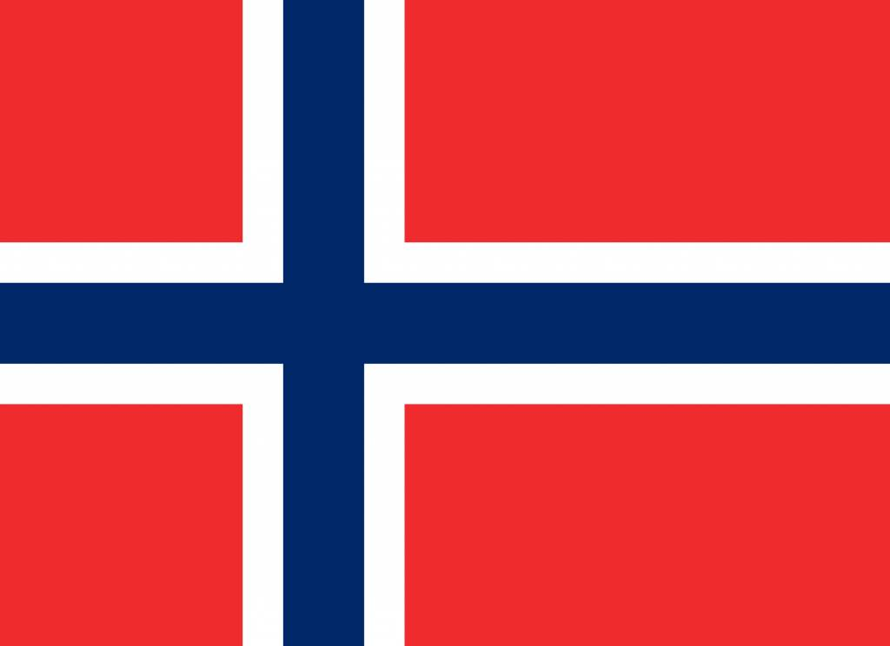
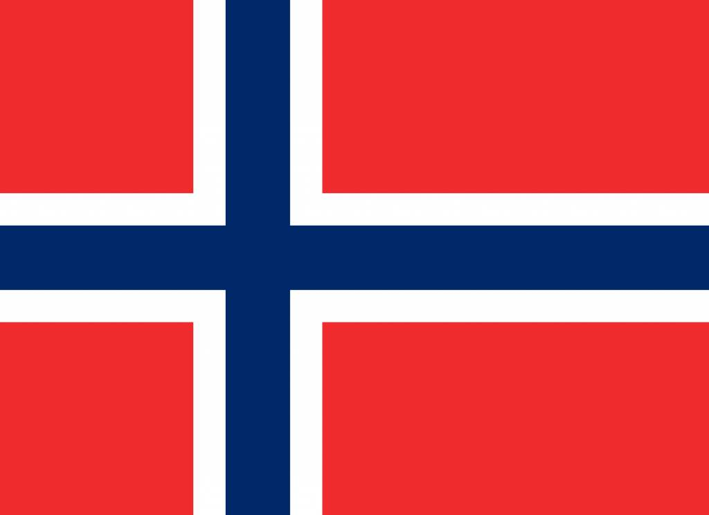
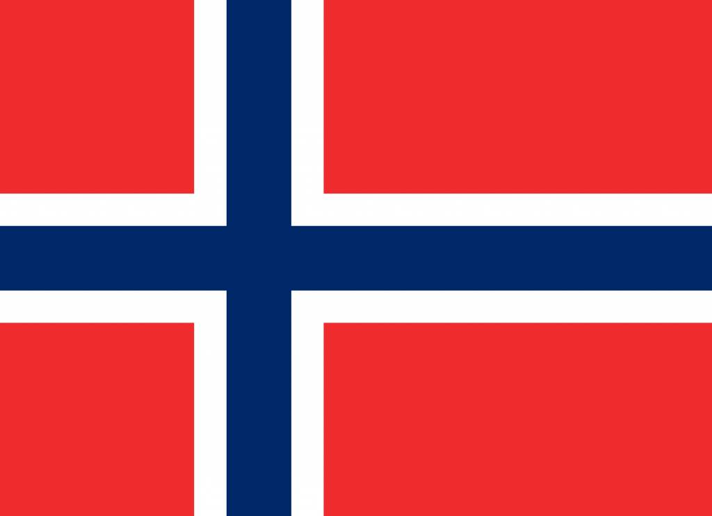

wybierz flagę

Państwo wyspiarskie położone na południowo-zachodnim Pacyfiku i składające się z dwóch głównych wysp (Północnej i Południowej) oraz szeregu mniejszych, w tym wyspy Stewart i wysp Chatham.
Państwo w Azji Wschodniej, południowej części Półwyspu Koreańskiego powstałe po II wojnie światowej na terenach zajętych przez wojska Stanów Zjednoczonych.
Państwo w Europie Północnej będące monarchią konstytucyjną, którego terytorium obejmuje zachodnią i północną część Półwyspu Skandynawskiego, Jan Mayen, Svalbard, Wyspę Bouveta i Lofoty.